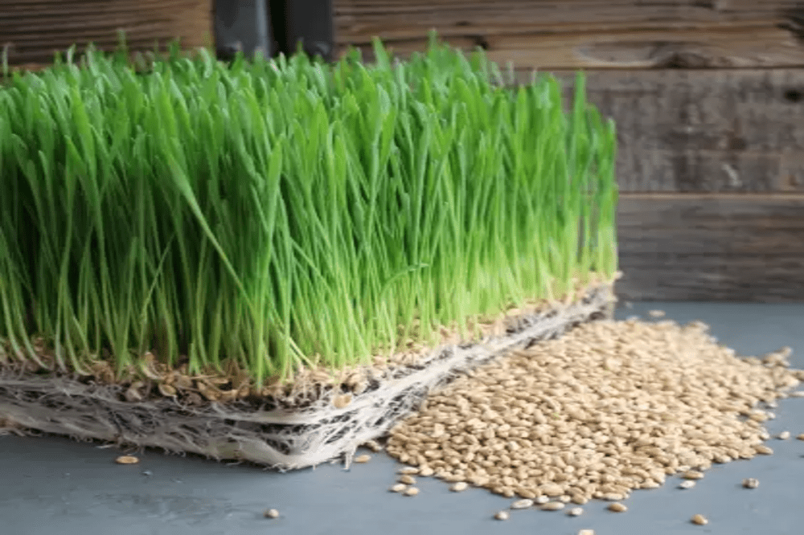
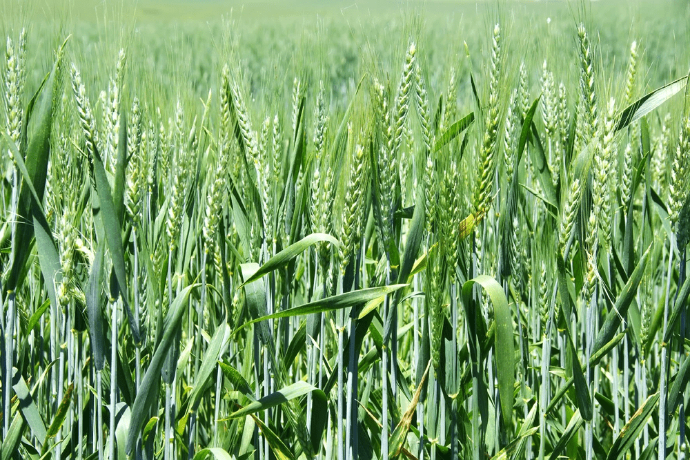
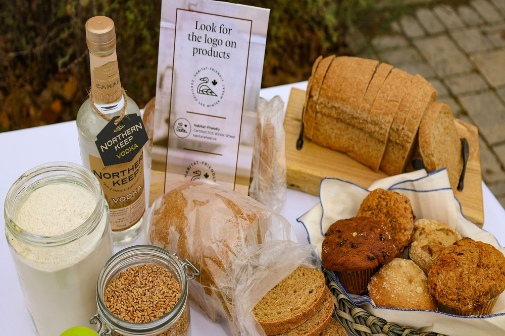

Winter wheat
Winter wheat is a cool-season crop that is planted in the fall and harvested in the spring. It is an important crop in many parts of the world, particularly in regions with mild winters and well-drained soils
Cost of Winter wheat
The cost of planting winter wheat can vary depending on factors such as the size of the farm, the cost of seeds and inputs, and labor.The cost of planting can be significant, but it can vary depending on the specific practices and inputs used by the farmer.The cost of planting can be significant, but it can vary depending on the specific practices and inputs used by the farmer.
Return after selling Winter wheat
The return on investment from selling winter wheat can vary depending on a variety of factors, such as the yield per acre, the market price for wheat, and any transportation or storage costs associated with selling the crop